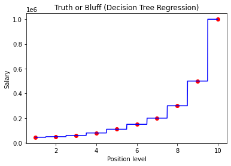

Decision tree for regression
Contents
23.3. Decision tree for regression#
23.3.1. Importing the libraries#
import numpy as np
import matplotlib.pyplot as plt
import pandas as pd
23.3.2. Importing the dataset#
dataset = pd.read_csv('../../../data/Position_Salaries.csv')
X = dataset.iloc[:, 1:-1].values
y = dataset.iloc[:, -1].values
23.3.3. Training the Decision Tree Regression model on the whole dataset#
from sklearn.tree import DecisionTreeRegressor
regressor = DecisionTreeRegressor(random_state = 0)
regressor.fit(X, y)
DecisionTreeRegressor(random_state=0)In a Jupyter environment, please rerun this cell to show the HTML representation or trust the notebook.
On GitHub, the HTML representation is unable to render, please try loading this page with nbviewer.org.
DecisionTreeRegressor(random_state=0)
23.3.4. Predicting a new result#
regressor.predict([[6.5]])
array([150000.])
23.3.5. Visualising the Decision Tree Regression results#
X_grid = np.arange(min(X), max(X), 0.01)
X_grid = X_grid.reshape((len(X_grid), 1))
plt.scatter(X, y, color = 'red')
plt.plot(X_grid, regressor.predict(X_grid), color = 'blue')
plt.title('Truth or Bluff (Decision Tree Regression)')
plt.xlabel('Position level')
plt.ylabel('Salary')
plt.show()

23.3.6. Acknowledgements#
Code is inspired by Machine Learning A-Z.